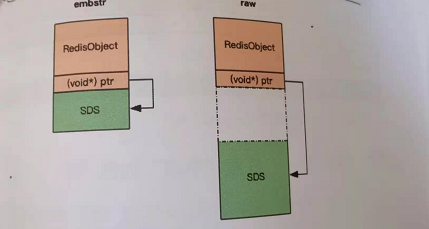

基础和应用篇
Redis(Remote Dictionary Service)：远程字典服务
Redis基础数据结构
string（字符串）
Redis所有的数据结构都以唯一的key字符串作为名称，然后通过这个唯一key值来获取相应的value数据。Redis的字符串是动态字符串，是可以修改的字符串，类似于Java的ArrayList，采用预分配冗余空间的方式来减少内存的频繁分配。
|
|
list（列表）
Redis的列表相当于Java语言的LinkedList，它是链表，而不是数组。列表中的每个元素都使用双向指针顺序，串起来可以同时支持前向后向遍历。Redis的列表结构常用来做异步队列，栈使用。Redis底层存储的不是一个简单的linkedlist，而是quicklist的一个结构。首先，在队列元素较少的情况下，会使用一块连续的内存存储，这个结构是ziplist，即压缩队列。它将所有的元素彼此紧挨着一起存储，分配的是一块连续的内存。当数据库较多的时候才改成quicklist。

|
|
hash(字典)
Redis的字典相当于Java语言里面的HashMap，它是无序字典，内部存储了很多键值对。实现的结构跟Java的HashMap也是一样的。也就是第一维hash的数组位置碰撞时，就会将碰撞的元素使用链表串接起来。

当字段很大的情况下，要进行rehash时，Java需要一次性全部rehash。而Redis做了个改进，采用的是渐进式rehash策略。（渐进式rehash会在rehash的同时，保留新旧两个hash结构，然后通过后台异步线程来处理rehash的任务。查询时会同时查询两个hash结构，然后在后续的定时任务以及hash操作指令中，循环渐进地将旧hash的内容一点点地迁移到新的hash结构中。当搬迁完成后，就会使用新的hash结构取而代之。
|
|
set(集合)
Redis的集合相当于Java语言里面的HashSet，它的内部实现相当于一个特殊的字典，字典中的所有的value都是一个值Null。当集合中最后一个元素被移除后，数据结构被自动删除，内存会被回收。
|
|
zset(有序列表)
一方面它是一个set，保证了内部value的唯一性，另一方面，它可以给每个value赋予一个score，代表这个value的排序权重。zset中的最后一个value被移除后，数据结构被自动删除，内存被回收。zset内部的排序功能是通过跳跃列表数据结构来实现的。
|
|
分布式锁
容器型数据结构：
- create if not exists:如果容器不存在，那就创建一个，在进行操作。
- drop if no elements:如果容器里的元素没有了，那么立即删除容器，释放内存。
Redis本身没有实现分布式锁，但是呢，可以通过setnx(set if not exists)指令，来只允许被一个客户端占坑，来实现独占锁。至于其他的工作，但是需要用户进行实现的。在实现的过程，要考虑redis的超时机制，不能实现可靠的分布式锁。
延时队列
Redis的消息队列不是专门的消息的队列，它没有非常多的高级特性，没有ack保证，如果对消息的可靠性有这极高要求，不满足使用。
Redis的list列表数据结构常用来作为异步消息队列使用，用rpush和lpush操作入队列，用lpop和rpop操作出队列。
阻塞读在队列没有数据的时候，会立即进入休眠状态，一旦数据到来，则立即醒过来。消息的延迟几乎为零。用blpop/brpop替代前面的lpop/rpop，就解决通过sleep不能够实时读取消息的作用。
如果线程一直阻塞在那里，redis的客户端连接就成为闲置连接，闲置过久，服务器一般会主动断开连接，减少闲置资源占用。如果如果抛出异常的时候，一定要进行重试。
Redis的zrem方法是多线程多进程争抢任务的关键，它的返回值决定了当前实例有没有抢到任务，通过zrem来删除队列的消息来决定唯一的属主。
位图
Redis的位数组是自动扩展的，如果设置了某个偏移位置超出了现有的内容范围，就会自动将位数组进行零扩展。
|
|
bitcount用来统计指定位置范围内1的个数，bitpos用来查找指定范围内出现的第一个0或者1.
HyperLogLog
提供不准确的去重计数方案，虽然不准确，但是也不是非常离谱，标准误差是0.81%。
|
|
HyperLogLog需要占据12KB的存储空间，Redis对HyperLogLog的存储进行了优化，在计数比较小时，它的存储空间采用稀疏矩阵存储，空间占用小，仅仅在计数慢慢变大，稀疏矩阵占用空间渐渐超过了阈值，才会一次性转变成稠密矩阵，才会占用12KB的空间。
布隆过滤器
起到去重作用的同时，在空间上还能够节省90%以上，只是有一定的误判概率。但是主要参数设置得当，它的准确率也可以控制得相对足够准确，只有小小得误判概率。当布隆过滤器说某个值存在时，这个值可能不存在；当它说某个值不存在时，那就肯定不存在。并且误判率越低，需要的空间就越大。布隆过滤器到了Redis4提供了插件功能之后才正式登场，需要自己下载该功能。
Scan
平时使用了keys函数的好坏处
- 没有offset/limit参数，一次性吐出所有满足要求的key
- keys算法时遍历算法，复杂度时O(n)，如果实例中有千万级以上的key，使用keys就会导致Redis服务卡顿，所有读写Redis的其他指令都会被延后甚至耗时报错。因为Redis是单线程程序，顺序执行所有指令，其他指令必须等到当前的keys指令执行完才能够继续。
Scan的好处：
- 复杂度虽然是O(n)，但它是通过游标分步进行的，不会阻塞线程
- 提供limit参数，可以控制每次返回结果的最大条数，limit只是一个hint，返回的结果可多可少（limit不是限定返回结果的数量，而是限定服务器单次遍历的字典槽位数量）
- 同keys一样，提供了模式匹配功能
- 服务器不需要为游标保存状态，游标的唯一状态就是scan返回给客户端的游标整数
- 返回的结果可能有重复
- 遍历的过程中如果有数据修改，修改后的数据能不能遍历到是不确定的
- 单次返回的结果是空并不意味着遍历结束，而是要看返回的游标值是否为零。
Java的HashMap在扩容时会一次性地将旧数组下挂接的元素全部转移到新数组下面，如果HashMap中元素特别多，线程就会出现卡顿现象。Redis采用的时渐进式rehash。它会同时保留旧数组和新数组，然后在定时任务中以及后续对hash的指令操作中渐渐地将旧数组中挂接的元素迁移到新数组上。这意味着要操作处于rehash中的字段，需要同时访问新旧两个数组结构。如果在旧数组下面找不到元素，还需要到新数组下面寻找。scan对于rehash中的字典，需要同时扫描新旧槽位，然后将结果融合后返回给客户端，所以导致可能出现重复值。
原理篇
线程IO模型
Redis是个单线程程序，Node.js也是单线程，Nginx也是单线程程序。
非阻塞IO：当调用套接字的读写方法，默认它是阻塞的，比如read方法要传递进去一个参数n，表示最多读取n个字节后再返回，如果一个字节都没有，线程就会卡在那里，直到新的数据到来或连接关闭，read方法才会返回。该为阻塞IO。非阻塞IO在套接字对象上提供了一个选项Non_Blocking，当这个选项打开时，读写方法不会阻塞，而是能读多少读多少，能写多少写多少。读方法和写方法都会通过返回值来告知程序实际读写了多少字节。
事件轮询：最简单的事件轮询API是select函数，它是系统调用，输入是读写描述符read_fds & write_fds,输出是与之对应的可读可写事件，同时还提供了一个timeout参数，如果没有事件到来，那么最多等待timeout的值的时间，线程处于阻塞状态，一旦线程还有其他事件到来，就可以立即返回。时间过了之后还是没有任何事件到来，也会立即返回。现代操作系统使用的是epoll。
指令队列：Redis会将每个客户端套接字都关联一个指令队列。客户端的指令通过队列来排队进行顺序处理，先到先得
响应队列：Redis服务器通过响应队列来将指令的返回结果回复给客户端，如果队列为空，可以将当前客户端描述符从write_fds里面移出来，防止没有啥子数据可写，一直在尝试，占用CPU。
定时任务：Redis定时任务会记录在一个最小堆的数据结构中，最快要执行的任务排在堆的最上方，在每个循环周期里，Redis都会怼最小堆里面已经到时间点的任务排在堆的最上方。处理完毕后，将最快要执行的任务还需要的时间记录下来。
通讯协议
Redis采用的是文本协议，名字叫RESP，是一个文本协议，优势在于实现过程异常简单，解析性能极好。但是比较浪费流量。
持久化
Redis的持久化的方式分为两种：
- 快照（全量备份）
- AOF日志（连续的增量备份）
快照：Redis在持久化会调用glibc的函数fork产生一个子进程，快照持久化完全交给子进程来处理，父进程继续处理客户端请求。子进程做数据持久化，不会修改现有的内存数据结构，然后序列化写到磁盘中。父进程使用COW（Copy On Write)的方式来对内存进行修改。所以，虽然Redis一直在处理外部的请求，但是呢，子进程对应的内存是没有发生改变。
AOF：AOF日志存储的是Redis服务器的顺序指令序列，AOF日志只记录对内存进行修改的指令记录。Redis会在收到客户端修改指令后，进行参数校验，逻辑处理，如果没有问题，会立即将该指令文本存储到AOF日志中。也就是说，先执行指令才将日志罗盘。（主机的AOF日志在内存中实际上是一个环状结构）
AOF重写：提供了bgrewwriteaof指令用于对AOF日志进行瘦身，其原理就是开辟一个子进程对内存进行遍历，转换成一系列Redis的操作指令，序列化到一个新的AOF日志文件中。序列化完毕后再将操作期间发生的增量AOF日志追加到这个新的AOF日志文件中，追加完毕后就会立即替换旧的AOF日志文件
fsync：对AOF文件写操作，将内存写到了内核为文件描述符分配的一个内存缓存中，然后内核会异步将脏数据刷回到磁盘中。Redis现在采用的是每隔1s左右执行一次fsync操作，也就是说，如果操作系统宕机了，会丢失一秒钟的数据
Redis混合持久化：采用rdb文件+增量的AOF日志文件。AOF日志是自持久化开始到持久化结束的这段时间发生的增量AOF日志。
对于IO操作，我们不一定要采用每执行一个指令就fsync一次磁盘，也不能够采用操作系统自己控制的方式，而是应该控制在一定的时间内，或者一定的事务个数
管道
pipeline：对于客户端和服务器的沟通时，如果对于每个指令都进行tcp发送的话，会导致效率优有限。最好能够采用的将多个指令合并成一个数据包进行发送的方式，来让节省网络的时间。
操作系统socket write操作只负责将数据写到本地操作系统内存的发送缓存中，然后就返回了，剩下的事务交给操作系统内核异步将数据发送到目标机器。但是如果发送缓存满了，那么就需要等待缓冲空出空闲空间出来，这个就是写操作IO操作的真正耗时
read操作也是一样的道理，read操作只负责将数据从本地操作系统内核的接收缓存中取出来就了事，但是如果缓冲是空的，就需要等待数据到来，这个就是read操作IO操作的真正耗时
其实，TCP机制一般都是将ACK报文和数据报文一起发送的方式，来提高效率。

事务
Redis的事务指令分别是multi，exec，discard。multi指示事务的开始，exec指示事务的执行，discard指示事务的丢弃。
由于Redis的单线程特性，它不用担心自己在执行队列的时候被其他指令所打断。
Redis事务根本不具备“原子性”，而仅仅是满足了事务的隔离性中的串行化——当前执行的事务有着不被其他事务打断的权利。
Redis可以使用watch机制来进行乐观锁的判断。watch会在事务开始之前盯住一个或者多个关键变量，当事务执行时，也就是服务器收到exec指令要顺序执行的事务队列时，Redis会检查关键变量自watch之后是否被修改（包括当前事务所在的客户端），如果关键变量被人动过，exec指令会返回NULL，客户端可以选择重试。
PubSub
Redis自己没有实现消息队列，消息队列不支持消息的多播机制。（不过基于Redis开发的插件是能够实现该功能的）
|
|
PubSub的生产者传递过来一个消息，Redis会直接找到相应的消费者传递过去，如果消费者都没有，消息会被丢掉，不会保存。
小对象压缩
Redis对于小对象，不会采用HashMap这样的二维数组，而是采用ziplist这样的一维字节数组结构。Redis的intset是一个紧凑的整数数组结构，用于存放元素都是整数且元素个数较少的set集合。当集合对象的元素不断增加，或者某个值过大，这种小对象存储会自动升级到标准结构。
|
|
集群篇
CAP原理
当网络分区发生时，一致性和可用性两难全
Redis不能保证实时一致性，只能够保证最终一致性
Redis同步方式：
- 增量同步（指令流—），主节点会将那些对自己的状态产生修改性影响的指令记录在本地的内存buffer中，然后异步将buffer中的指令同步到从节点，从节点一边执行同步指令来达到和主节点一样的状态，一边向主节点反馈自己同步到哪里（偏移量）。要设置合适buffer大小参数，来保证在全量同步时间内的日志存储量。
- 快照同步：主节点使用bgsave，将当前内存的数据全部快照到磁盘文件中，然后再把快照文件的内容全部传送到从节点。从节点进行全量加载，完毕后再进行增量同步。
- 无盘复制：主服务直接通过套接字将快照内容直接发送到从节点，不用先存储到磁盘中，再进行发送。
Sentinel
Redis Sentinel集群看成时一个zookeeper集群，它是集群高可用的心脏，一般有3-5个节点组成。（跟zookeeper是相同的功能）
min-slaves-to-write 1第一个参数表示主节点必须有一个从节点在进行正常复制，否则就停止对外写服务，丧失可用性。
连接池建立新连接时，回去查询主节点地址，如果主节点挂掉了，或者主节点是只读的，就断开所有连接，重新使用新地址来建立新连接。Redis一般都是在处理命令时捕捉一个异常ReadOnlyError。我们的代码设计也可以采用相同的方式
Cluster
Redis Cluster是去中心化，也就是每个服务都能够对外界提供服务，而且是提供所有服务的功能，然后再由该服务将请求转发到对应的服务上去，。（Redis之间是通过一种特殊的二进制协议交互集群信息，保证速度块）
Redis Cluster槽位的信息存储于每个节点中，并且，可以通过纠正机制来实现槽位信息的校验调整，来保证所有的槽位能够正确对应到对应的Redis实例中。
扩展篇
Stream
Stream在Redis中发布出来，是插件。它是一个支持多播的可持久消息队列。也就是说Stream是独立的，跟客户端的session没有绑定关系。
每个Stream都可以挂多个消费组，每个消费组都由个游标last_delivered_id在Stream数组之上往前移动，表示当前消费组已经消费到那条消息了。每个消费组都有一个Stream内唯一的名称，消费组不会自动创建。
每个消费组的状态都是独立的，相互不影响。也就是说同一份Stream内部的消息会被每个消费组都消费到。
同一个消费组可以挂接多个消费者，这些消费者之间是竞争关系，任意一个消费者读取了消息都会使游标last_delivered_id往前移动。每个消费者都有一个组内唯一名称。
Stream在Sentinel和Cluster集群环境下，Stream是可以支持高可用的。
|
|
Redis内存策略
当Redis内存超出了配置的限制的话，就会采用策略，来让用户自己决定如何腾出新空间来提供读写服务。
redis目前使用的是近似LRU算法，当出现内存超出maxmemory时，就会执行LRU淘汰算法，随机采样出5个key，然后淘汰最旧的key，如果淘汰后内存还是超出maxmemory，继续淘汰。（采样的范围有两种：已经过期的数据和所有的keys)
该过程是通过后台的线程一直在扫描
过期策略
Redis会将每个设置了过期时间的key放入一个独立的字典中，以后会定时遍历这个字典来删除到期的key（定时时间默认为10s，由后面线程定时扫描）（注意，我们在设置超时时间的时候，不要设置在统一的时间，防止在同一时间大量删除keys导致出现卡顿）
另外一种方法，就是零散处理，在访问到对应的key的时候，对已经超时的key进行删除。
所谓的懒惰删除，实际上，就是后台保存一个队列，队列保存着任务，定时从队列中获取任务进行执行
源码篇
探索字符串内部
字符串内部使用的是SDS（Simple Dynamic String),如同ArrayList。Redis规定字符串的长度不能超过512M。
Redis每个key都有对应的数据结构进行代表
|
|
字符串的存储一般分为两种

第一种是SDS直接在RedisObject的连续内存的后面，适合存放不超过44个字节的字符串
第二种是存放大字符串，有一个新的内存位置进行存储
在字符串长度小于1MB之前，扩容空间采用加倍策略，也就是保留100%的冗余空间。当字符串长度超过1MB之后，为了避免加倍后的冗余空间过大而导致浪费，每次扩容只会多分配1MB大小的冗余空间。
探索字典内部
跟HashMap相似。只是rehash的时候采用的是渐进式的而已。
说白了，就是直接提交任务给后台线程，让后台线程异步运行来进行扩容字典。
rehash扩容条件：当hash表中元素的个数等于第一维数组的长度时，就会开始扩容。扩容是异步的，由后台线程来处理。如果元素的个数已经超过第一维数组长度的5倍，那就是强制扩容。
缩容条件：元素个数低于数组长度的10%。
探索压缩列表内部
压缩列表用来实现zset。压缩列表是一块连续的内存空间，元素之间紧挨着压缩，没有任何冗余空隙。
ziplist都是紧凑存储，没有冗余空间，如果插入一个新的元素就需要调用realloc扩展内存。ziplist不适合存储大型字符串，存储的元素也不应过多
探索快速列表内部
类似于LinkedList，后面采用了另外一种方法，就是quicklist，其根本的目的还是在于节省内存，毕竟每个LinkedLink的前后都要有一个指针。
quicklist内部默认单个ziplist长度为8KB，超过了这个字节数，就会另起一个ziplist。ziplist的长度由配置参数list-max-ziplist-size决定。
探索跳跃列表内部
主要用在zset,也就是有序set。zset的内部实现是一个hash字典+一个跳跃列表。
LFU和LRU
LRU：只要一次访问，就会让数据变热
LFU：需要追踪最近一段时间的访问频率，如果某个key只是偶然被访问一次是不足变热，需要在近一段时间内被访问很多次才有机会被LFU算法认为变热。
默认Redis时钟值每毫秒更新一次，在定时任务serverCron里主动设置。
淘汰机制只会在内存达到maxmemory的设置时才会触发，在每一个指令的执行之前都会触发。每次触发都是采用随机策略，随机挑选若干个key，更新这个key的热度，淘汰掉热度最低的key。